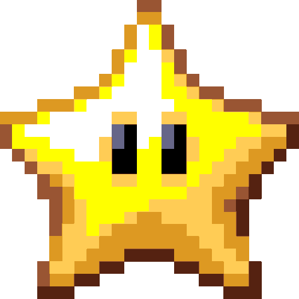

المطورون والمصممون
من هم المطورون والمصممون:
• anis (المالك)
• TIMOTHY (التصميم الأول)
• anis (المالك)
- إعادة تصميم واجهة المستخدم (الأزرار، حقول الإدخال، الترويسة، الخلفية، النصوص...)
- تصميم الأزرار والعناصر الأخرى
- برمجة النظام (العملات، السوق، الدردشة، وظائف الحسابات...)
- استضافة الموقع
- تطوير تطبيق الويب
- إصلاح الأخطاء والمشاكل
- تطوير الموقع
• TIMOTHY (التصميم الأول)
- التصميم الأول لواجهة المستخدم (الأزرار، الترويسة، الخلفية...)
• minato
(شكر خاص)

- تصميم واجهة مستخدم جديدة (تصميم الأزرار والحركات)